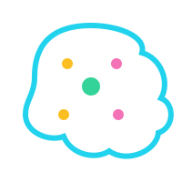

「反应快慢」不是玄学，它背后是一套能被睡眠影响、也能被训练的神经机制。
反应力，简单说就是从「接收到刺激」到「做出动作」所用的时间，通常用毫秒（ms）衡量。这个过程大致分成三步：
普通人看到刺激后做出反应大约需要 200~300 毫秒，训练和充足睡眠能让这个时间更短、更稳定。

睡眠不是「关机」，而是大脑的「整理与修复」时间：
所以熬夜之后不是「不困就行」，而是你的大脑确实变慢了。
注意力像一束「聚光灯」。睡眠不足时，这束光会晃来晃去、聚不拢，于是上课走神、看错题就频繁发生。
动态视力是眼睛追踪快速移动物体的能力。眼睛疲劳、大脑处理变慢，都会让它下降——打球接不住球、看比赛跟不上，往往就是它出了问题。
反应速度是三者共同作用的结果。感知快、专注稳、动作准，三者缺一不可，而它们都离不开良好的睡眠。
反应力 ≈ 感知 × 专注 × 执行。睡眠是这三者的「基础电量」，训练是「性能优化」。 想变快，先睡饱，再练习。